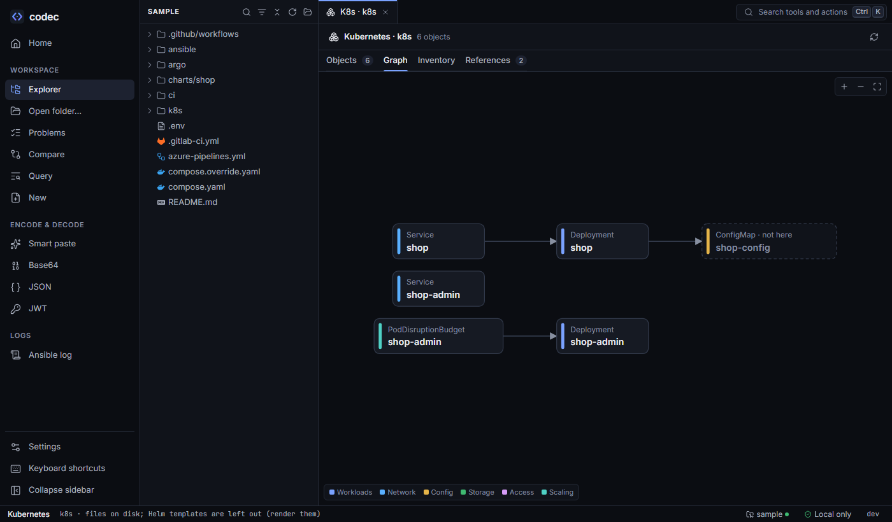
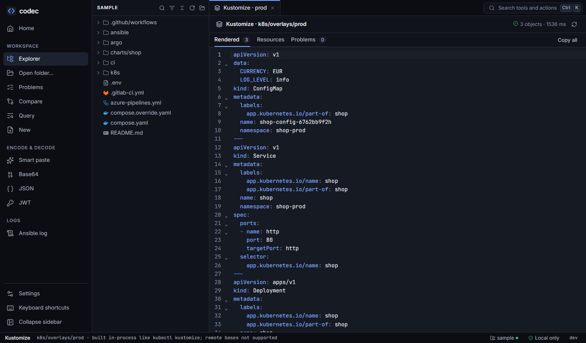

Kubernetes and Kustomize
The Resources view turns a folder of manifests, a Helm render or a Kustomize build into objects you can read: what each one is, what it connects to, what it runs, and which references point nowhere.

k8s folder as a graph. The dashed ConfigMap is referenced but not defined here — Kustomize generates it.Opening it#
- A folder: the boxes icon on any Kubernetes file ("Kubernetes resources in this folder"), or "Kubernetes: resources in this folder" in the palette for the whole workspace. Helm templates are left out — render them instead.
- A Helm render: the Resources tab of the Helm view.
- A Kustomize build: the Resources tab of a Kustomize build.
Objects#
One card per object, with the facts you would otherwise dig for: replicas and strategy, each container with its image, ports, env sources and resources, Service type and ports, selectors, ConfigMap and Secret keys, and who uses it. Secret cards mask values until you reveal them. Click a card's source to open the file at the object.
The same object defined twice — a base and an overlay's patch — appears as two cards and one graph node.
Relationships#
codec works out how objects connect, the way Kubernetes would:
| From | To | How |
|---|---|---|
| Service | Pods of a workload | Selector against pod template labels; named target ports checked against container ports. |
| Ingress | Service and port | Backend service name and port (number or name). |
| Workload | ConfigMap, Secret, PVC, ServiceAccount | envFrom, valueFrom, volumes, imagePullSecrets, serviceAccountName. |
| RoleBinding / ClusterRoleBinding | Role and subjects | roleRef and subjects. |
| HPA, PDB | Their target | scaleTargetRef, PDB selector. |
The graph colours nodes by group (workloads, network, config, storage, access, scaling), highlights a node's neighbours on hover, and pans and zooms.
References#
A reference to something that isn't in the scope — a Service whose selector matches no pods, a missing ConfigMap — is listed with where it is. These are warnings, not errors: the target may live in another folder, another chart, or be created at deploy time.
k8s/base/deployment.yaml:26: warning: Deployment shop refers to ConfigMap shop-config, which isn't in this scope
Fine if it is created elsewhere (another chart, an operator, or already in the cluster); otherwise check the name.
k8s/legacy/admin.yaml:30: warning: Service shop-admin selects no pods in this scope (selector app=shop-admin-ui)
Check that the selector matches the pod template labels of a workload (spec.template.metadata.labels).Inventory#
Totals for the whole scope: objects by kind, images and tags (and who runs each), ports, ConfigMaps and Secrets in use, and requests and limits summed per workload and overall — handy before a capacity conversation or an image upgrade.
In the editor#
- The outline says what things are:
Container app · nginx:1.27 · 1 port,Env DB_PASSWORD · from Secret db/password. - Hovering a Secret's
datavalue shows it decoded. - Copy without cluster noise (neat) copies manifests without
status,managedFields,uid,resourceVersion, timestamps and the last-applied annotation — perfect for turningkubectl get -o yamloutput into something you can commit.
Kustomize#
Any folder with a kustomization.yaml can be built from the palette ("Kustomize: build folder") or from the file's toolbar. codec runs the kustomize library in-process: the output is the same as kubectl kustomize, with no kubectl or kustomize installed.

- Files are collected from the kustomization and everything it references — resources, bases, components, patches, generator inputs — into memory, so what-if edits in open tabs are used and nothing is written.
- The build has Rendered, Resources and Problems tabs; problems include lint and schema findings on the output.
- Not supported: remote bases (git or http URLs — codec never downloads) and
helmCharts(render the chart in the Helm view instead). Both are reported clearly.
From the command line#
codec k8s images deploy/ # images, tags, who runs them
codec k8s refs deploy/ # how objects connect; exit 2 on broken references
helm template ./chart | codec k8s refs # works on stdin too
kubectl get deploy api -o yaml | codec k8s neat
codec kustomize build k8s/overlays/prod # like kubectl kustomize